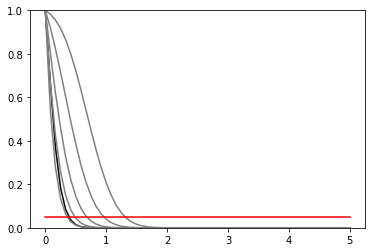

Multibin Coupled HistoSys¶
[1]:
%pylab inline
Populating the interactive namespace from numpy and matplotlib
[2]:
import logging
import json
import pyhf
from pyhf import Model
logging.basicConfig(level=logging.INFO)
[3]:
def prep_data(sourcedata):
spec = {
"channels": [
{
"name": "signal",
"samples": [
{
"name": "signal",
"data": sourcedata["signal"]["bindata"]["sig"],
"modifiers": [
{"name": "mu", "type": "normfactor", "data": None}
],
},
{
"name": "bkg1",
"data": sourcedata["signal"]["bindata"]["bkg1"],
"modifiers": [
{
"name": "coupled_histosys",
"type": "histosys",
"data": {
"lo_data": sourcedata["signal"]["bindata"]["bkg1_dn"],
"hi_data": sourcedata["signal"]["bindata"]["bkg1_up"],
},
}
],
},
{
"name": "bkg2",
"data": sourcedata["signal"]["bindata"]["bkg2"],
"modifiers": [
{
"name": "coupled_histosys",
"type": "histosys",
"data": {
"lo_data": sourcedata["signal"]["bindata"]["bkg2_dn"],
"hi_data": sourcedata["signal"]["bindata"]["bkg2_up"],
},
}
],
},
],
},
{
"name": "control",
"samples": [
{
"name": "background",
"data": sourcedata["control"]["bindata"]["bkg1"],
"modifiers": [
{
"name": "coupled_histosys",
"type": "histosys",
"data": {
"lo_data": sourcedata["control"]["bindata"]["bkg1_dn"],
"hi_data": sourcedata["control"]["bindata"]["bkg1_up"],
},
}
],
}
],
},
]
}
pdf = Model(spec)
data = []
for c in pdf.spec["channels"]:
data += sourcedata[c["name"]]["bindata"]["data"]
data = data + pdf.config.auxdata
return data, pdf
[4]:
validation_datadir = "../../validation/data"
[5]:
source = json.load(open(validation_datadir + "/2bin_2channel_coupledhisto.json"))
data, pdf = prep_data(source["channels"])
print(data)
init_pars = pdf.config.suggested_init()
par_bounds = pdf.config.suggested_bounds()
unconpars = pyhf.infer.mle.fit(data, pdf, init_pars, par_bounds)
print("parameters post unconstrained fit: {}".format(unconpars))
conpars = pyhf.infer.mle.fixed_poi_fit(0.0, data, pdf, init_pars, par_bounds)
print("parameters post constrained fit: {}".format(conpars))
pdf.expected_data(conpars)
[170.0, 220.0, 110.0, 105.0, 0.0]
parameters post unconstrained fit: [1.53170588e-12 2.21657891e+00]
parameters post constrained fit: [0. 2.21655133]
[5]:
array([116.08275666, 133.24826999, 183.24826999, 98.08967672,
2.21655133])
[6]:
def plot_results(test_mus, cls_obs, cls_exp, poi_tests, test_size=0.05):
plt.plot(poi_tests, cls_obs, c="k")
for i, c in zip(range(5), ["grey", "grey", "grey", "grey", "grey"]):
plt.plot(poi_tests, cls_exp[i], c=c)
plt.plot(poi_tests, [test_size] * len(test_mus), c="r")
plt.ylim(0, 1)
[7]:
def invert_interval(test_mus, cls_obs, cls_exp, test_size=0.05):
crossing_test_stats = {"exp": [], "obs": None}
for cls_exp_sigma in cls_exp:
crossing_test_stats["exp"].append(
np.interp(
test_size, list(reversed(cls_exp_sigma)), list(reversed(test_mus))
)
)
crossing_test_stats["obs"] = np.interp(
test_size, list(reversed(cls_obs)), list(reversed(test_mus))
)
return crossing_test_stats
[8]:
poi_tests = np.linspace(0, 5, 61)
tests = [
pyhf.infer.hypotest(
poi_test, data, pdf, init_pars, par_bounds, return_expected_set=True
)
for poi_test in poi_tests
]
cls_obs = np.array([test[0] for test in tests]).flatten()
cls_exp = [np.array([test[1][i] for test in tests]).flatten() for i in range(5)]
[9]:
print("\n")
plot_results(poi_tests, cls_obs, cls_exp, poi_tests)
invert_interval(poi_tests, cls_obs, cls_exp)
[9]:
{'exp': [0.3654675198094938,
0.4882076670368835,
0.683262284467055,
0.9650584704888153,
1.3142329292131938],
'obs': 0.3932476110375604}
